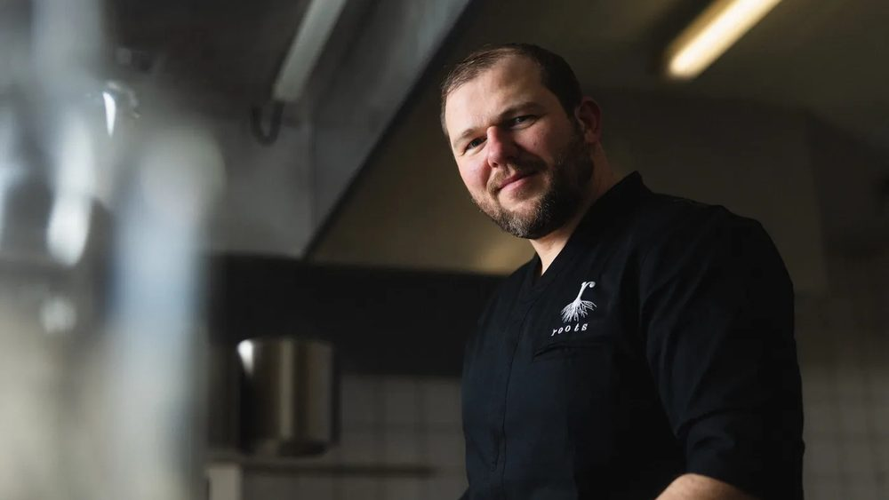

roots
Bachletten · Basel
Danke
| |||||||
Lieber Luca Danke für deine Bewerbung als Chef de Rang, sie ist bei uns angekommen. Lebenslauf und Foto gehen an unseren Managing Director Dragan Rapic. Wir melden uns bei dir. Wir sind immer auf der Suche nach enthusiastischen Teammitgliedern. | |||||||
 | |||||||
| |||||||
| Zu den Jobs ↗ | |||||||
Kompetent kommt nicht von kompliziert. 
Herzlich, Dragan Rapic und das Team | |||||||
roots
Bachlettenstrasse 1 · 4054 Basel
+41 61 322 10 56 · info@roots-basel.ch Zwei Michelin-Sterne · Grüner Michelin-Stern · 18 GaultMillau-Punkte |